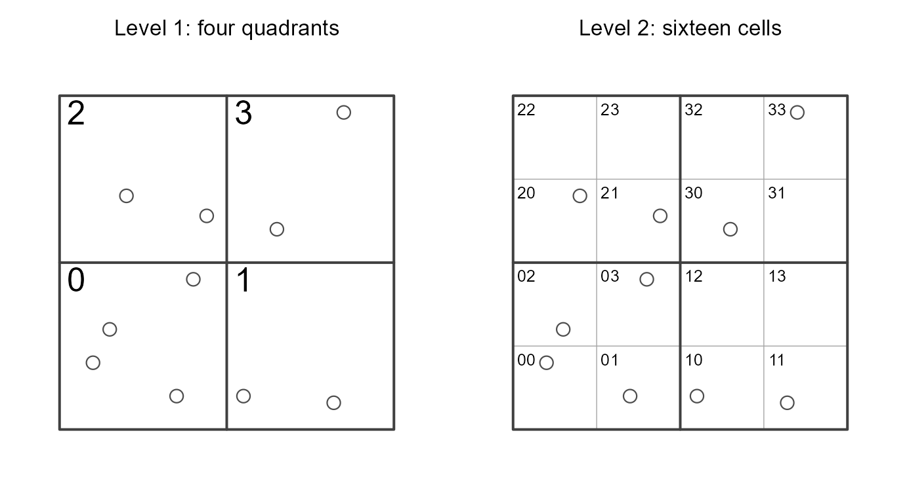

Technical Details
Michael Dumelle, Tom Kincaid, Anthony R. Olsen, and Marc Weber
Source:vignettes/articles/technical.Rmd
technical.RmdIntroduction
This vignette covers technical details regarding the functions that
perform computations in spsurvey. spsurvey
builds its design-based inference from survey (Lumley 2004, 2024) and provides spatially
referenced tools for sampling and inference. sf objects
(Pebesma 2018) are required for the
spatially balanced sampling functions (i.e., grts()) and
are supported (but not required) for inference (i.e., the
*_analysis() functions). We first provide a notation guide
and then describe relevant details for core functions and then for
auxiliary functions.
If you use spsurvey in a formal publication or report,
please cite it. Citing spsurvey lets its maintainers devote
more resources to it in the future (Dumelle,
Kincaid, et al. 2023). To view the spsurvey
citation, run
citation(package = "spsurvey")#> To cite spsurvey in publications use:
#>
#> Michael Dumelle, Tom Kincaid, Anthony R. Olsen, Marc Weber (2023).
#> spsurvey: Spatial Sampling Design and Analysis in R. Journal of
#> Statistical Software, 105(3), 1-29. doi:10.18637/jss.v105.i03
#>
#> A BibTeX entry for LaTeX users is
#>
#> @Article{,
#> title = {{spsurvey}: Spatial Sampling Design and Analysis in {R}},
#> author = {Michael Dumelle and Tom Kincaid and Anthony R. Olsen and Marc Weber},
#> journal = {Journal of Statistical Software},
#> year = {2023},
#> volume = {105},
#> number = {3},
#> pages = {1--29},
#> doi = {10.18637/jss.v105.i03},
#> }Notation Guide
\[\begin{equation*} \begin{split} N, \, n & = \text{Sampling frame (population) size; sample size} \\ s_i & = \text{The } i\text{th site (sampling unit)} \\ \mathbf{I}(A) & = \text{Indicator function; one if } A \text{ holds and zero otherwise} \\ I_i & = \mathbf{I}(s_i \text{ is selected into the sample}) \\ \pi_i, \, \pi_{ij} & = \text{Inclusion probability for } s_i \text{; joint inclusion probability for } s_i, s_j \\ \Delta_{ij} = \pi_{ij} - \pi_i \pi_j & = \text{Covariance of the sample membership indicators } I_i \text{ and } I_j \\ w_i = \pi_i^{-1} & = \text{Design weight for } s_i \\ y_i & = \text{Response value at } s_i \\ \tau, \, \hat\tau & = \text{Population total; its estimator} \\ \bar y, \, \hat{\bar y} & = \text{Population mean; its estimator} \\ D, \, \delta_i = \mathbf{I}(s_i \in D) & = \text{Subpopulation (domain); its membership indicator} \\ \mathcal{N}(s_i) & = \text{Local neighborhood of } s_i \\ w_{ij} & = \text{Local neighborhood weight for the pair } (i, j) \\ \hat V_{\mathrm{lnb}}(\cdot) & = \text{The local neighborhood variance estimator} \\ a_i & = \text{Hierarchical (quadrant-recursive) address of } s_i \\ h = 1, \ldots, H & = \text{Stratum index; number of strata} \\ w_{1i}, \, w_{2j} & = \text{Stage one weight for cluster } i \text{; stage two weight for unit } j \\ \hat\tau_{2i} & = \text{Estimated stage two total within cluster } i \\ v_i & = \text{Voronoi inclusion probability sum for } s_i \end{split} \end{equation*}\]A hat denotes an estimator (e.g., \(\hat\tau\)) or a quantity evaluated at estimated inputs. The index \(i\) runs over sites throughout. Notation specific to a single function or family of functions is introduced where it is first used.
Unless stated otherwise, everything in this article assumes sampling
without replacement, in which a site can appear in the sample at most
once. This is the setting grts() and irs()
select samples in, and it is what makes the joint inclusion
probabilities \(\pi_{ij}\) (and hence
\(\Delta_{ij}\)) the central quantities
of design-based variance estimation. When a variance estimator here
behaves as though sampling were with replacement, we say so
explicitly.
Core Functions
The core functions are the ones a user must invoke to go from a
sampling frame to a design-based inference: Select a sample, adjust its
weights, and estimate parameters and their uncertainty. This part is
self-contained, so reading it start to finish gives a complete account
of sampling, weighting, and analysis in spsurvey without
reference to anything in the auxiliary functions part.
Design-Based Inference
spsurvey is a package for spatial design-based
inference. In design-based inference, the response values \(y_1, \ldots, y_N\) for the \(N\) units in the sampling frame are treated
as fixed, and randomness comes from which \(n\) of them happen to be selected into the
sample. Nothing is assumed about how the responses were generated. All
probability statements refer to the sampling design, that is, to the
distribution of the sample membership indicators \(I_1, \ldots, I_N\).
For classical references on design-based inference, see Cochran (1977), Särndal et al. (1992), and Lohr (2022).
Populations, Sampling Frames, and Coverage
Inference begins with a target population (i.e., population of interest), the collection of units about which we want to make statements (e.g., all lakes in the contiguous United States, or CONUS). Henceforth we call this simply the population. We represent the population by a sampling frame, the list of units actually eligible for selection. In environmental surveys the sampling frame is typically a GIS (Geographic Information System) layer, such as a hydrography layer derived from NHDPlus (Moore et al. 2019).
In a perfect world the population and the sampling frame match exactly. In practice there are two kinds of coverage error. Overcoverage occurs when some units in the sampling frame are not in the population. Undercoverage occurs when some units in the population are not in the sampling frame. Of these, undercoverage is far more damaging. With overcoverage, all members of the population have a chance of being selected, but some ineligible units are selected and should be identified during data collection (i.e., evaluation). The population is then a subset of the population and its size can be estimated via the weights from eligible and ineligible members as determined during evaluation. With undercoverage there is unfortuntaely no such remedy; some members of the population had no chance at all of being selected, so the inference applies to a narrower population than the one intended.
Inclusion Probabilities and Design Weights
Each unit \(s_i\) in the sampling frame has a known inclusion probability \(\pi_i = \Pr(I_i = 1) \in (0, 1]\). Its design weight is \(w_i = \pi_i^{-1}\). Informally, \(s_i\) represents \(w_i\) units in the sampling frame, including itself. Two units \(s_i\) and \(s_j\) have a joint inclusion probability \(\pi_{ij} = \Pr(I_i = 1, I_j = 1)\), with \(\pi_{ii} = \pi_i\). The covariance of the two membership indicators is \[ \Delta_{ij} = \mathrm{Cov}(I_i, I_j) = \pi_{ij} - \pi_i\pi_j , \] with \(\Delta_{ii} = \pi_i(1 - \pi_i)\). Under sampling without replacement the \(\Delta_{ij}\) are generally nonzero for \(i \ne j\), because selecting one unit changes the chance of selecting another. This dependence is precisely what design-based variance estimation must account for.
grts() and irs() construct the \(\pi_i\) and the corresponding \(w_i\) at selection time. The
*_analysis() functions use the \(w_i\) through the weight
argument. The sampling frame does not need to be used again except for
potential weight adjustments (covered later).
The Horvitz-Thompson Estimator
For a population total \(\tau = \sum_{i=1}^N y_i\), the Horvitz-Thompson (HT) estimator (Horvitz and Thompson 1952) is \[\begin{equation}\label{eq:ht-total} \hat\tau = \sum_{i=1}^{N} I_i \frac{y_i}{\pi_i} = \sum_{i=1}^n w_i y_i , \end{equation}\] where the second sum runs over the \(n\) sampled units. Because \(E(I_i) = \pi_i\), each term has expectation \(y_i\), so \(\hat\tau\) is unbiased for \(\tau\) over repeated sampling under the design (Lohr 2022). Intuitively, each sampled unit is inflated by the reciprocal of its own chance of being selected.
When the population size \(N\) is known, a population mean can be estimated as \(\hat{\bar y} = \hat\tau / N\). More often \(N\) is not known exactly, and the mean is estimated as a ratio of two HT totals, \[ \hat{\bar y} = \frac{\hat\tau}{\hat N}, \qquad \hat N = \sum_{i=1}^n w_i , \] where \(\hat N\) is the HT estimator of the population size. Even when \(N\) is known, using \(\hat N\) rather than \(N\) in the denominator removes the uncertainty in the estimated population size from the estimate of average behavior, which usually reduces variance substantially (Hájek 1971). If all design weights are equal, then \(\hat N = N\) exactly and the two forms are equivalent.
Totals, Means, Proportions, and Distribution Functions
Every population estimate produced by the *_analysis()
functions is either an HT total or a ratio of two HT totals. It is
convenient to write both at once. For a transformation \(g(\cdot)\) of the response, define \[
\hat\tau(g) = \sum_{i=1}^n w_i \, g(y_i), \qquad
\hat R(g) = \frac{\hat\tau(g)}{\hat N} .
\] Then the estimands used throughout the package are
- Totals: \(\hat\tau(g)\) with \(g(y) = y\) for a continuous response, or \(g(y) = \mathbf{I}(y = c)\) for the size of category \(c\) of a categorical response.
- Means: \(\hat R(g)\) with \(g(y) = y\).
- Proportions: \(\hat R(g)\) with \(g(y) = \mathbf{I}(y = c)\).
- Distribution functions: \(\hat R(g)\) with \(g(y) = \mathbf{I}(y \le t)\), giving the estimated cumulative distribution function \(\hat F(t) = \widehat{\Pr}(y \le t)\) evaluated at a grid of \(t\) values.
Because every estimand has this form, a single variance estimator
applied to an appropriately transformed and weighted variable suffices
for all of them. The next section describes the four such estimators
spsurvey offers.
Variance Estimation
spsurvey offers four variance estimators, selected with
the vartype argument: "local",
"SRS", "HT", and "YG". They
differ in what they assume about the joint inclusion probabilities and
in how much of the design they attempt to reproduce.
The Horvitz-Thompson and Yates-Grundy Estimators
Because \(\hat\tau\) in \(\eqref{eq:ht-total}\) is a linear combination of the membership indicators, its variance follows directly from the covariances \(\Delta_{ij}\): \[\begin{equation}\label{eq:ht-var} V(\hat\tau) = \sum_{i=1}^N \sum_{j=1}^N \Delta_{ij} \frac{y_i}{\pi_i} \frac{y_j}{\pi_j} . \end{equation}\] This is the classical form given by Särndal et al. (1992). It says that the variance of an HT total is a weighted sum of products of weighted responses, with weights given by the design’s own indicator covariances. Only the sampling design enters randomly; the responses are fixed.
Equation \(\eqref{eq:ht-var}\) is a population quantity, since it sums over all \(N\) units. The Horvitz-Thompson variance estimator turns it into a sample quantity by dividing each term by the probability \(\pi_{ij}\) that the pair \((i, j)\) appears in the sample: \[\begin{equation}\label{eq:ht-var-est} \hat V_{\mathrm{HT}}(\hat\tau) = \sum_{i=1}^n \sum_{j=1}^n \frac{\Delta_{ij}}{\pi_{ij}} \frac{y_i}{\pi_i} \frac{y_j}{\pi_j} . \end{equation}\] This is the same inflation device that produced \(\hat\tau\) itself, applied to pairs of units rather than to single units.
When the design has a fixed sample size, an algebraically equivalent population expression is available: \[ V(\hat\tau) = -\frac{1}{2} \sum_{i=1}^N \sum_{j \ne i}^N \Delta_{ij} \left(\frac{y_i}{\pi_i} - \frac{y_j}{\pi_j}\right)^2 , \] and the corresponding Yates-Grundy (also Sen-Yates-Grundy) estimator (Sen 1953; Yates and Grundy 1953) is \[\begin{equation}\label{eq:yg-var} \hat V_{\mathrm{YG}}(\hat\tau) = -\frac{1}{2} \sum_{i=1}^n \sum_{j \ne i}^n \frac{\Delta_{ij}}{\pi_{ij}} \left(\frac{y_i}{\pi_i} - \frac{y_j}{\pi_j}\right)^2 . \end{equation}\] The two estimators target the same variance but behave differently in finite samples. Because \(\eqref{eq:yg-var}\) is built from contrasts of weighted responses rather than from their products, it is invariant to adding a constant to every \(y_i\) and is generally more stable, particularly when the responses are far from zero. It is also less prone to negative variance estimates for many designs.
Both estimators require \(\Delta_{ij}\), and hence \(\pi_{ij}\), for every sampled pair.
spsurvey does not compute joint inclusion probabilities for
GRTS samples because there is generally no closed form for them. When
vartype is "HT" or "YG", the
\(\pi_{ij}\) are therefore
approximated.
Joint Inclusion Probability Approximations
The jointprob argument selects the approximation, which
is applied through survey. Each approximation writes \(\pi_{ij}\) as a correction to the
independence value \(\pi_i\pi_j\) that
would hold if the membership indicators were uncorrelated.
-
"overton"(the default): Overton’s approximation (Overton 1987; Stehman and Overton 1987) uses \[\begin{equation}\label{eq:overton} \pi_{ij} \approx \pi_i \pi_j \, \frac{n - 1}{\, n - (\pi_i + \pi_j)/2 \,}, \qquad i \ne j . \end{equation}\] -
"hr": The truncated Hartley-Rao approximation (Hartley and Rao 1962) is closely related but uses the sum of the two inclusion probabilities rather than their average, together with a term summarizing how uneven the inclusion probabilities are across the sampling frame: \[\begin{equation}\label{eq:hartley-rao} \pi_{ij} \approx \pi_i \pi_j \, \frac{n - 1}{\, n - (\pi_i + \pi_j) + n^{-1}\sum_{k=1}^N \pi_k^2 \,}, \qquad i \ne j . \end{equation}\] -
"brewer": Brewer’s method (Brewer 2002; Berger 2004) for sampling with probability proportional to size without replacement.
In each case the factor \((n-1)/n\) that dominates the correction reflects the basic feature of sampling without replacement: Conditioning on one unit being selected leaves one fewer slot for the rest, so \(\pi_{ij}\) falls slightly below \(\pi_i\pi_j\). These are approximations and are not exact for GRTS samples, whose spatial ordering induces a joint inclusion structure that none of the three formulas attempts to capture.
The Simple Random Sampling Estimator
Setting vartype = "SRS" names an estimator, not a
design. It is the estimator that would be exactly correct under simple
random sampling, and spsurvey will use it whatever the
actual design was.
Under simple random sampling without replacement of \(n\) units from \(N\), every sample of size \(n\) is equally likely, so \(\pi_i = n/N\), all design weights equal \(w_i = N/n\), and \(\pi_{ij} = n(n-1)/\{N(N-1)\}\) for \(i \ne j\). Substituting these into \(\eqref{eq:ht-var-est}\) and simplifying gives the familiar textbook form \[\begin{equation}\label{eq:srs-var} \hat V_{\mathrm{SRS}}(\hat\tau) = N^2 \left(1 - \frac{n}{N}\right) \frac{s^2}{n}, \qquad s^2 = \frac{1}{n - 1}\sum_{i=1}^n (y_i - \bar y)^2 , \end{equation}\] where \(\bar y\) is the sample mean. All the design information has collapsed into two numbers, the sample size and the sampling fraction \(n/N\).
When the design weights are not all equal, the design is not a simple
random sample and \(\eqref{eq:srs-var}\) does not apply. What
spsurvey reports in that case is the with-replacement (WR)
approximation of Hansen and Hurwitz
(1943), which treats the sample as though the \(n\) units had been drawn independently:
\[\begin{equation}\label{eq:wr-var}
\hat V_{\mathrm{WR}}(\hat\tau) = \frac{n}{n - 1} \sum_{i=1}^n \left(w_i
y_i - \frac{\hat\tau}{n}\right)^2 .
\end{equation}\] Equation \(\eqref{eq:wr-var}\) is exactly what \(\eqref{eq:ht-var-est}\) becomes when every
off-diagonal \(\Delta_{ij}\) is set to
zero. It discards all information about how the design correlates the
selection of different units, and keeps only the spread of the weighted
responses. Equation \(\eqref{eq:srs-var}\) is the special case of
\(\eqref{eq:wr-var}\) when the weights
are equal and a finite population correction is supplied, which is why
the same vartype covers both.
Because \(\eqref{eq:wr-var}\) ignores the negative correlation that sampling without replacement induces among the membership indicators, it is usually conservative, meaning it tends to overstate the variance of a well-spread sample. That conservatism is why it is a safe fallback, and also why it leaves efficiency on the table for a spatially balanced design.
The Local Neighborhood Variance Estimator
The local neighborhood variance estimator (Stevens and Olsen 2003), requested with
vartype = "local", is the default for every analysis
function and is one of spsurvey’s signature contributions.
For a weighted response or residual vector \(z\) with entries \(z_i\), it is \[\begin{equation}\label{eq:local-var}
\hat V_{\mathrm{lnb}}(z) = \sum_{i=1}^n \sum_{j \in \mathcal{N}(s_i)}
w_{ij} \left(z_j - \bar z_{\mathcal{N}(s_i)}\right)^2 , \qquad
\bar z_{\mathcal{N}(s_i)} = \sum_{j \in \mathcal{N}(s_i)} w_{ij} z_j .
\end{equation}\] Each site \(s_i\) contributes the weighted spread of
its own spatial neighborhood about that neighborhood’s own weighted
mean. Applied to \(z_i = w_i y_i\),
equation \(\eqref{eq:local-var}\)
estimates \(V(\hat\tau)\); applied to
\(z_i = w_i (y_i - \hat{\bar y}) / \hat
N\), it estimates \(V(\hat{\bar
y})\) after the ratio linearization described in Subpopulations.
Why Neighborhoods Estimate the Variance
The estimator conditions on the property that GRTS delivers, namely spatial balance. A spatially balanced sample spreads its sites evenly across the sampling frame, so it behaves like a design that has partitioned the region into \(n\) compact cells of roughly equal inclusion probability and taken one site from each. That is a highly efficient design, but it creates a familiar difficulty: With a single site per cell there is no within-cell replication, so no cell can supply a variance estimate on its own.
The classical remedy in such designs is to collapse neighboring cells and treat the sites in the merged group as replicates of one another. The local neighborhood estimator does exactly this, but adaptively and in two dimensions. It merges each site with its nearest sampled neighbors, treats that small group as locally homogeneous, and reads the variance contribution of the site from how much its neighbors disagree with one another. Where the response varies smoothly in space, neighbors agree closely, the local contrasts in \(\eqref{eq:local-var}\) are small, and the reported variance is correspondingly smaller than \(\eqref{eq:wr-var}\) would give. Where the response has no spatial structure, neighbors disagree as much as any two sites would, and the two estimators give similar answers. This is the sense in which the local neighborhood estimator converts spatial balance into precision, and it is why it is preferred for GRTS samples. Because the neighborhoods are constructed from the realized sample rather than derived from the design, the estimator never requires \(\pi_{ij}\).
Local Neighborhoods and Their Weights
localmean_weight() builds the neighborhoods \(\mathcal{N}(s_i)\) and the weights \(w_{ij}\) in three steps.
-
Nearest neighbors: For each site \(s_i\), the neighborhood begins as \(s_i\) itself together with its
nbh - 1nearest sampled sites by Euclidean distance in the sample’s coordinates. The defaultnbh = 4gives each site three neighbors. - Symmetrization: The neighborhoods are then made mutual. If \(s_j\) belongs to \(\mathcal{N}(s_i)\), then \(s_i\) is added to \(\mathcal{N}(s_j)\). Nearest neighbor relationships are not symmetric in general, and without this step a site in a sparse part of the sampling frame could appear in many neighborhoods while an isolated site appeared in almost none.
- Weighting: Within a neighborhood, an initial weight is assigned by a taper on distance rank, so the nearest neighbor receives the largest weight and the weight decreases linearly with rank, scaled by \(\pi_j^{-1}\) so that a neighbor representing more of the sampling frame counts for more. The weights in each neighborhood are then normalized to sum to one, making \(\bar z_{\mathcal{N}(s_i)}\) a genuine weighted average rather than a weighted sum.
Normalizing each neighborhood makes the rows of the weight matrix \(\{w_{ij}\}\) sum to one. It does not make the columns sum to one, and the column sums are what tie the local pieces back to the estimate they are supposed to describe. To see why, sum the neighborhood means over all sites: \[ \sum_{i=1}^n \bar z_{\mathcal{N}(s_i)} = \sum_{i=1}^n \sum_{j \in \mathcal{N}(s_i)} w_{ij} z_j = \sum_{j=1}^n z_j \left(\sum_{i=1}^n w_{ij}\right) . \] If every column sums to one, the parenthesized factor disappears and the neighborhood means add up to \(\sum_j z_j\), which for \(z_j = w_j y_j\) is the HT total \(\hat\tau\) itself. In other words, the neighborhoods decompose the overall estimate into \(n\) local pieces that add back up to it exactly, with no part of any site’s contribution counted twice or dropped. Given that, the contrasts in \(\eqref{eq:local-var}\) are contrasts within a genuine decomposition, and \(\hat V_{\mathrm{lnb}}\) is the sum of a variance computed separately in each local neighborhood.
To obtain this property, localmean_weight() adjusts the
row-normalized weights as little as possible, in a constrained least
squares sense, subject to every column also summing to one. The
adjustment is computed with the Moore-Penrose generalized inverse (Penrose 1955). The resulting matrix is doubly
stochastic, meaning all of its rows and all of its columns sum to
one.
The Covariance Generalization
Several spsurvey estimands are functions of more than
one total, and combining them correctly requires covariances as well as
variances. localmean_cov() supplies these by applying the
same neighborhood contrasts to a pair of columns rather than to one. For
columns \(z^{(k)}\) and \(z^{(l)}\), \[\begin{equation}\label{eq:local-cov}
\widehat{\mathrm{Cov}}_{\mathrm{lnb}}\!\left(z^{(k)}, z^{(l)}\right) =
\sum_{i=1}^n \sum_{j \in \mathcal{N}(s_i)} w_{ij} \left(z^{(k)}_j - \bar
z^{(k)}_{\mathcal{N}(s_i)}\right)\left(z^{(l)}_j - \bar
z^{(l)}_{\mathcal{N}(s_i)}\right) .
\end{equation}\] Setting \(l =
k\) recovers \(\eqref{eq:local-var}\), so \(\eqref{eq:local-cov}\) produces a full
covariance matrix whose diagonal holds the local neighborhood variances.
This is what lets spsurvey combine several totals without
assuming they are independent, as required by the contingency table of
cont_cdftest(), the cell totals of
the risk functions, and the paired
surveys of change_analysis().
Computational Cost
Building the neighborhoods requires a dense \(n \times n\) matrix of pairwise distances,
and the doubly stochastic correction requires a generalized inverse of a
matrix of that size. Memory therefore grows with \(n^2\) and computing time with \(n^3\). For the sample sizes typical of
environmental monitoring this is negligible, but it becomes noticeable
in the low thousands of sites, which matters most for the
subset_local = FALSE option described in Subpopulations, where the neighborhood
structure is built from the full sample rather than from the
subpopulation alone.
Choosing Among Variance Estimators
The four vartype options divide into two groups by what
they need from the design.
-
"HT"and"YG": These reproduce the design’s joint inclusion structure, using \(\eqref{eq:ht-var-est}\) and \(\eqref{eq:yg-var}\) with \(\pi_{ij}\) supplied by the chosenjointprobapproximation. They are the right choice when the design genuinely has known or well-approximated joint inclusion probabilities. For GRTS samples the approximations do not describe the spatial ordering, so these options neither exploit spatial balance nor reflect it. -
"SRS"and"local": These use only the design weights."SRS"discards the joint structure entirely, per \(\eqref{eq:wr-var}\), and is typically conservative for a spatially balanced sample."local"recovers the missing information from the realized spatial arrangement of the sample rather than from the design specification, per \(\eqref{eq:local-var}\).
The point estimates are identical under all four options, since they
all follow from \(\eqref{eq:ht-total}\). Only the reported
standard errors differ. For GRTS samples, "local" is
recommended and is the default.
From Standard Errors to Confidence Intervals
Built from the data, a confidence interval quantifies a range of
plausible values for some parameter \(\theta\). Confidence intervals combine a
point estimate, \(\hat{\theta}\), with
a standard error (\(\widehat{\mathrm{SE}}(\hat\theta) = \sqrt{\hat
V(\hat\theta)}\)) and a critical value. The critical value scales
the standard error by the requested confidence level, based on the
assumed distribution of \(\hat{\theta}\). Generally in
spsurvey, normal (i.e., Gaussian) confidence intervals are
computed; a \(100(1-\alpha)\%\)
normal-based, equal-tailed, two-sided confidence interval is \[\begin{equation}\label{eq:ci}
\hat\theta \pm z_{1-\alpha/2} \, \widehat{\mathrm{SE}}(\hat\theta) ,
\end{equation}\] where \(z_{1-\alpha/2}\) is a standard normal (mean
zero, variance one) quantile (this type of interval is sometimes called
a Wald interval). The conf argument sets the confidence
level as a percentage and defaults to 95, so \(z_{0.975} \approx 1.96\). The margin of
error reported alongside each estimate is the product \(z_{1-\alpha/2}\widehat{\mathrm{SE}}(\hat\theta)\)
itself, so an interval can be reconstructed from the estimate and its
margin of error alone.
The justification for the normal-based form of \(\eqref{eq:ci}\) is asymptotic (i.e., applies for large sample sizes). Achieving proper (i.e., nominal) confidence interval coverage is an asymptotic property. Under mild conditions, Horvitz-Thompson estimators and smooth functions of them are approximately normal distributed as the sample size grows (Särndal et al. 1992; Lohr 2022). Intervals may be different from their stated level when the sampling distribution of \(\hat\theta\) is not approximately normal. This can occur when the sample size is small, when the design weights are highly variable, or when the response is highly skewed.
spsurvey has a few departures from the normal-based
asymptotic (i.e., Wald) intervals:
- Bounded estimands are truncated: A proportion’s interval from \(\eqref{eq:ci}\) is clipped to \([0, 1]\) before being reported on a percentage scale, and a risk difference’s to \([-1, 1]\). Near a boundary the reported interval is therefore asymmetric, even though the interval implied by \(\eqref{eq:ci}\) is symmetric.
- Relative risk and attributable risk use the log scale: As described in Risk Analysis, \(\eqref{eq:ci}\) is applied to \(\log \widehat{RR}\) or to \(\log \hat\theta\) and the endpoints are then back-transformed, giving an interval that is asymmetric on the original scale.
-
Percentiles do not use \(\eqref{eq:ci}\): Their intervals
come from
survey’s own quantile machinery, which constructs a Wald confidence interval for the proportion below the quantile (the quantile is the value of the response at the percentile). The inverse of the CDF is then used to map this interval back to the quantile scale. (Woodruff 1952; Lumley 2024). -
Regression-based trends do not always use \(\eqref{eq:ci}\): In trend_analysis(), the interval for
the fitted trend (i.e., fixed effect, slope coefficient) is taken from
the model object. For
"SLR"and"WLR", this is a \(t\) interval based on the regression’s residual degrees of freedom. For"LMM"and"GLMM", this is a Wald interval \(\eqref{eq:ci}\).
Design Features
The remaining arguments to the *_analysis() functions
describe features of the design that change the estimator, the variance
estimator, or both.
Subpopulations
A subpopulation, or domain, is a subset \(D\) of the sampling frame that the analysis
is restricted to, such as a single ecoregion or a single lake size
class. Every *_analysis() function loops over one or more
subpops variables and reports a full set of estimates for
each of their levels. When subpops is not supplied, a
single level covering every site is created automatically, and when
subpops is supplied together with
All_Sites = TRUE, that all sites level is reported
alongside the user-supplied levels.
Domain estimation deserves care, because the domain is defined in the sampling frame but observed only through the sample.
The Domain Total and Its Variance
Let \(\delta_i = \mathbf{I}(s_i \in D)\) record domain membership, which is a fixed property of the sampling frame. The domain total is \(\tau_D = \sum_{i=1}^N \delta_i y_i\), and its HT estimator is obtained by applying \(\eqref{eq:ht-total}\) to the transformed response \(\delta_i y_i\): \[ \hat\tau_D = \sum_{i=1}^n w_i \delta_i y_i . \] Its variance follows from \(\eqref{eq:ht-var}\) applied to the same transformed response, \[\begin{equation}\label{eq:domain-var} V(\hat\tau_D) = \sum_{i=1}^N \sum_{j=1}^N \Delta_{ij} \frac{\delta_i y_i}{\pi_i} \frac{\delta_j y_j}{\pi_j} , \end{equation}\] with the corresponding estimator obtained by dividing each term by \(\pi_{ij}\) and summing oversampled pairs, exactly as in \(\eqref{eq:ht-var-est}\).
The important feature of \(\eqref{eq:domain-var}\) is the range of the sums. They run over the whole sampling frame, not over the domain. Terms involving a non-domain unit contribute zero, but the units contributing zero are determined by which units were sampled, and that is random. The realized number of sampled domain members is itself a random variable, and its variability is part of \(V(\hat\tau_D)\). This is the standard design-based treatment of domains (Cochran 1977; Särndal et al. 1992).
The alternative is to keep only the sampled domain members and treat them as if they were the entire sample. That conditions on the realized domain sample size, removes one source of variability, and generally understates the variance. The gap widens as the domain occupies a smaller share of the sampling frame, because the realized domain sample size is then relatively more variable.
For a domain mean, the same logic applies after linearizing the ratio \(\hat{\bar y}_D = \hat\tau_D / \hat N_D\), where \(\hat N_D = \sum_i w_i \delta_i\). To first (Taylor series) order the variance of \(\hat{\bar y}_D\) is the variance of an HT total of the linearized variable \[ z_i = \frac{\delta_i \left(y_i - \hat{\bar y}_D\right)}{\hat N_D} , \] so the domain indicator again multiplies the quantity whose variance is being estimated, and again over the full sample rather than the domain alone.
What This Means for the Local Neighborhood Weights
Substituting \(z_i\) into \(\eqref{eq:local-var}\) makes the consequence concrete. The neighborhood structure is built from a set of sampled sites, and whether that set is the domain or the whole sample changes the weight matrix \(\{w_{ij}\}\) and therefore the estimate.
If the neighborhoods are built from the sampled domain members only, the weight matrix has one row and column per domain member. Every neighborhood consists entirely of domain members, and the contrasts measure only how variable \(y\) is among the domain’s own spatial neighbors.
If instead the neighborhoods are built from every sampled site, the weight matrix has one row and column per sampled site, and non-domain sites enter with \(z_i = 0\). Such a site is not dropped; rather, it joins its neighbors’ neighborhoods, takes a share of the neighborhood weight, and contributes a zero to the neighborhood mean, pulling that mean toward zero. A neighborhood that happens to contain few domain members therefore produces larger contrasts than one that is entirely inside the domain. That is exactly the behavior \(\eqref{eq:domain-var}\) calls for, since it is how the randomness of the realized domain sample size enters the variance.
The two constructions also give different neighborhoods geometrically. Domain members that are far apart in the sampling frame can be adjacent once non-domain neighbors are removed, so restricting to the domain first can pair sites that much further away than its non-domain neighbors.
The subset_local Argument
The subset_local argument selects between the two
constructions.
-
subset_local = FALSE: The neighborhood structure is built from every sampled site, with domain membership carried by \(\delta_i\). This is the standard design-based treatment of domains described above, and it is the theoretically correct one. It matches howsurveytreats domains for the othervartypeoptions. -
subset_local = TRUE: The neighborhood structure is built from the sampled domain members only. This conditions on domain membership and generally understates the variance, especially for population totals, when the domain does not fill the sampling frame. If domains are spatially compact, this approach gives should give very similar variance estimates compared tosubset_local = FALSE, as the neighborhoods will be similar.
subset_local = TRUE remains the default for backward
compatibility, and it is considerably cheaper, since the neighborhood
machinery then scales with the domain size rather than with the full
sample size (see Computational Cost).
Users who want design-based domain variances should set
subset_local = FALSE. The option is currently not available
for two-stage designs, where the affected functions raise an error
rather than silently returning a conditioned estimate.
Stratification
This is the only section that uses stratification notation. A
stratified design partitions the sampling frame into \(h = 1, \ldots, H\) strata and samples each
one independently. Supplying stratumID to an
*_analysis() function tells it to estimate within each
stratum and then combine.
How the per-stratum variances combine depends on the estimand, and it must be derived from the estimand’s own structure rather than assumed.
For a total, the strata totals simply add, \(\hat\tau = \sum_h \hat\tau_h\), so independence across strata gives \[\begin{equation}\label{eq:strat-total} \hat V(\hat\tau) = \sum_{h=1}^H \hat V(\hat\tau_h) , \end{equation}\] an unweighted sum. For a mean or proportion, the strata estimates combine as a weighted average, \(\hat{\bar y} = \sum_h (\hat N_h/\hat N) \hat{\bar y}_h\) with \(\hat N_h = \sum_{i \in h} w_i\), so the same independence gives \[\begin{equation}\label{eq:strat-mean} \hat V(\hat{\bar y}) = \sum_{h=1}^H \left(\frac{\hat N_h}{\hat N}\right)^2 \hat V(\hat{\bar y}_h) , \end{equation}\] a sum weighted by squared population shares.
Both rules follow from the estimand, not from the variance estimator,
so they hold whichever vartype produced each \(\hat V_h\).
Stratification also changes what the local neighborhoods are. They
are built and truncated separately within each stratum, so a site’s
neighbors always come from its own stratum and never from across a
stratum boundary. As the number of strata grows relative to the sample
size, more of each site’s true nearest spatial neighbors fall outside
its stratum and become unavailable, which erodes the efficiency
advantage of vartype = "local" over
vartype = "SRS".
At selection time, grts() and irs()
stratify through stratum_var and treat each stratum as a
completely independent design. The base sample size n_base
is then a named vector giving a size per stratum, and
caty_n, mindis, n_over, and
n_near may each be supplied as per-stratum lists named to
match n_base.
Two-Stage (Cluster) Sampling
In a two-stage design the sampling frame is grouped into clusters. A sample of clusters is drawn at the first stage, and units are then sampled within each selected cluster at the second stage. Environmental examples include selecting watersheds and then stream reaches within them, or selecting lakes and then locations within them.
The Standard Two-Stage Estimator
Let cluster \(i\) have first-stage
inclusion probability \(\pi_{1i}\) and
weight \(w_{1i} = \pi_{1i}^{-1}\), and
let unit \(j\) within a selected
cluster have second-stage weight \(w_{2j}\), the reciprocal of its conditional
inclusion probability given that its cluster was selected. The estimated
total within cluster \(i\) is \(\hat\tau_{2i} = \sum_{j \in i} w_{2j}
y_j\), and the overall HT estimator is \[\begin{equation}\label{eq:twostage-total}
\hat\tau = \sum_{i=1}^{n_1} w_{1i} \hat\tau_{2i} ,
\end{equation}\] where \(n_1\)
is the number of sampled clusters. Conditioning on which clusters were
selected splits the variance into a between-cluster and a within-cluster
part, \[
V(\hat\tau) = \underbrace{\sum_{i=1}^{N_1} \sum_{j=1}^{N_1} \Delta_{1ij}
\frac{\tau_{2i}}{\pi_{1i}} \frac{\tau_{2j}}{\pi_{1j}}}_{\text{between
clusters}} \; + \; \underbrace{\sum_{i=1}^{N_1}
\frac{V_{2i}}{\pi_{1i}}}_{\text{within clusters}} ,
\] where \(\Delta_{1ij}\) is the
first-stage indicator covariance, \(\tau_{2i}\) is the true cluster total,
\(V_{2i}\) is the second-stage variance
within cluster \(i\), and \(N_1\) is the number of clusters in the
sampling frame. The between term treats each cluster’s total as a single
observation drawn under the first-stage design; the within term
accumulates the second-stage variances of the selected clusters. This is
the decomposition survey implements for ordinary two-stage
designs, and its sample estimator is \[
\hat V(\hat\tau) = \hat
V_{\text{between}}\!\left(\left\{w_{1i}\hat\tau_{2i}\right\}\right) +
\sum_{i=1}^{n_1} w_{1i} \hat V_{2i} .
\] The first-stage weight appears to the first power in the
within term, not squared. Squaring it would double count the first-stage
inflation, since \(\hat V_{2i}\)
already estimates a within-cluster variance for one realized cluster
rather than for the sampling frame.
The Local Neighborhood Extension
spsurvey requests a two-stage design with
clusterID for the first-stage units, together with
stage-two siteID, weight, and coordinates, and
stage-one weight1 and coordinates. Optional
sweight and sweight1 supply size weights, and
Ncluster and stage1size supply the finite
population correction.
Setting vartype = "local" replaces each variance in the
decomposition above with \(\eqref{eq:local-var}\): \[\begin{equation}\label{eq:twostage-var}
\hat V(\hat\tau) = \hat
V_{\mathrm{lnb}}\!\left(\left\{w_{1i}\hat\tau_{2i}\right\}_{i=1}^{n_1}\right)
+ \sum_{i=1}^{n_1} w_{1i} \hat V_{\mathrm{lnb}}\!\left(\left\{w_{2j}
y_j\right\}_{j \in i}\right) .
\end{equation}\] The two terms use different coordinates. The
between term is evaluated at the stage-one coordinates with stage-one
inclusion probabilities, treating each cluster’s weighted total as a
single observation located at the cluster’s position. The within term is
evaluated separately inside each cluster at the stage-two coordinates. A
cluster containing a single stage-two unit contributes nothing to the
within term, since no within-cluster variability can be estimated from
one unit.
Size Weights
Sometimes a sampled site stands for an amount of resource rather than
for a count of units. Setting sizeweight = TRUE and
supplying sweight (and sweight1 for the first
stage of a two-stage design) multiplies the design weight by a size
variable, so that \[
w_i^{\mathrm{sw}} = w_i \times \texttt{sweight}_i .
\]
An example makes the construction concrete. Suppose lakes are sampled
from a sampling frame of lake polygon centers (i.e., a point), a
particular lake is selected with \(\pi_i =
0.02\), so \(w_i = 50\), and
that lake has area 30 hectares. With no size weight, \(\hat\tau\) built from \(w_i\) estimates a count: This lake stands
for 50 lakes. With sweight set to the lake area, the site’s
weight becomes \(w_i^{\mathrm{sw}} = 50 \times
30 = 1500\) hectares, and \(\hat\tau\) built from \(w_i^{\mathrm{sw}}\) estimates total lake
area rather than total lake count. The same device converts a stream
sample from a count of reaches into a total length by setting
sweight to reach length.
The size weight enters as a multiplicative adjustment to the design weight before any variance computation begins. It is used wherever \(w_i\) appears in the estimators above, including inside \(\eqref{eq:local-var}\), so no separate size-weight term appears in any variance formula.
The Finite Population Correction
The finite population correction is often presented as a separate factor applied to an otherwise infinite-population variance. It is more usefully understood as a summary of information that the general variance formula already contains.
Equation \(\eqref{eq:ht-var}\) makes no distinction between finite and infinite populations. It accounts for the finiteness of the sampling frame through the off-diagonal \(\Delta_{ij}\), which are negative for sampling without replacement because selecting one unit reduces the chance of selecting another. If joint inclusion probabilities were known, \(\eqref{eq:ht-var-est}\) would need no correction of any kind, since all of the relevant information is already in \(\Delta_{ij}/\pi_{ij}\).
The correction appears only when those off-diagonal terms are discarded. Comparing \(\eqref{eq:srs-var}\) with \(\eqref{eq:wr-var}\) shows what happens: Under simple random sampling the entire effect of the off-diagonal \(\Delta_{ij}\) collapses into the single scalar \(1 - n/N\), so the with-replacement estimator can be repaired by multiplying it by that factor. This is the familiar finite population correction, and it can only be factored out because simple random sampling ensures the correction to be the same for every pair of units.
The local neighborhood estimator is a variance estimator in the same sense that \(\eqref{eq:ht-var-est}\) is, not a corrected version of \(\eqref{eq:wr-var}\). It recovers pair information from the realized spatial arrangement rather than from \(\pi_{ij}\), and that information does not collapse into a single scalar, so there is no finite population correction to factor out of it. It is also derived for an effectively continuous population, following the extension of the Horvitz-Thompson framework to continuous universes by Cordy (1993).
In practice, fpc controls whether population size
information is passed through to survey. Supplying it
affects the "SRS", "HT", and "YG"
variances, and has no effect on \(\hat
V_{\mathrm{lnb}}\). For a single-stage design fpc
gives the resource size; for a two-stage design Ncluster
and stage1size give the number of clusters in the sampling
frame and the number of stage-two units within each sampled cluster.
Known Population Sizes
Supplying popsize incorporates known sampling frame
totals into the weights. The adjustment is chosen by the class of the
object supplied.
-
A
data.frame,table, orxtabs: Post-stratification. Weights are adjusted within each post-stratum so that the post-stratum’s weight total matches its known count in the sampling frame. -
A
list: Calibration, with the first element supplying the overall population total and subsequent elements supplying margin totals for each calibration variable. This is a generalized regression (GREG) style weight calibration.
Both adjustments act on the weights, and the adjusted weights are then used everywhere an unadjusted weight would be, including in the point estimates and in \(\eqref{eq:local-var}\).
The variance consequences differ by vartype. For
"SRS", "HT", and "YG", the
calibration is handled by survey, which accounts for the
adjustment in its variance calculation. For "local", the
local neighborhood estimator is applied to the adjusted weight times the
raw response. This correctly reflects the effect of the calibration on
the weights themselves, but it is not the residual-based variance a full
GREG treatment would use. A full treatment would regress the response on
the calibration variables and pass the model residuals to the variance
estimator, so that the variability explained by the auxiliary variables
is removed before the local contrasts are formed. Extending the local
neighborhood estimator in this way is planned future work (see Future Directions). Until then, a user
relying on popsize with a strongly predictive auxiliary
variable should not expect the reported "local" standard
error to show the full efficiency gain that calibration makes
available.
Spatially Balanced Sampling
Inclusion Probabilities for Sampling
Before any site is selected, grts() and
irs() compute an inclusion probability for every unit in
the sampling frame. These probabilities are what the selection
algorithms in the following sections realize into an actual sample, and
what the reported design weights are built from.
Equal Probability
With seltype = "equal", every unit in the sampling frame
receives \(\pi_i = n/N\), where \(n\) is the requested sample size and \(N\) is the number of units in the sampling
frame.
For a point sampling frame, \(N\) is
simply the number of points. For a linear or areal sampling frame, there
is no finite \(N\) to count: A stream
network is a continuum of locations along its lines, and a set of
wetland polygons is a continuum of locations within its areas. The
sampling frame is then infinite, and the design is described by a
density rather than by a per-unit probability. A sample of \(n\) sites from a network of total length
\(L\) has inclusion density \(n/L\), so that a segment of length \(\ell\) has expected count \(n\ell/L\), and similarly with total area in
place of total length. The design weight of a selected site is the
reciprocal of that density, and so carries units of length or area
rather than counts. How spsurvey realizes such a design in
practice is described in Linear
and Areal Resources.
Unequal Probability
With seltype = "unequal", categories come from
caty_var and expected per-category sample sizes from
caty_n. Within category \(c\) containing \(N_c\) units in the sampling frame, every
unit receives \(\pi_i = n_c/N_c\).
Requesting \(n_c\) greater than \(N_c\) implies an inclusion probability
greater than one and returns an error.
The values in caty_n are expected sample sizes, not
guaranteed ones. Selection still proceeds across the whole sampling
frame at once, so the realized number of sites in each category is
random with mean \(n_c\). This is the
essential difference from stratification. A stratified design draws each
stratum separately and therefore delivers exactly the requested count in
every stratum, whereas an unequal probability design delivers the
requested counts only on average.
For GRTS samples, giving up exact control is often useful. Because
the sites are drawn in one pass, the local neighborhoods used by
vartype = "local" are formed from whichever sampled sites
are genuinely closest, rather than being truncated at category
boundaries the way they are truncated at stratum boundaries (see Stratification). An unequal
probability design can therefore deliver the same emphasis on rare
categories while preserving more of the variance reduction that spatial
balance provides. Stratification remains the right choice when the
strata are small exact per-stratum sample sizes are required, for
instance when they are fixed by a reporting obligation.
Proportional to Size
With seltype = "proportional" and a size variable
aux_var, inclusion probabilities start out proportional to
the auxiliary variable \(x_i\) and
normalized to sum to \(n\). Because a
very large unit can receive a value above one, which is not a
probability, such units are pinned to one and the remaining probability
budget is redistributed. Pinning can push further units above one, so
the step repeats until no unit exceeds one. Units with a zero or
negative auxiliary value receive \(\pi_i =
0\) and are excluded from selection, with a warning.
As an example, suppose five lakes with areas \(x = (1, 2, 3, 10, 40)\) hectares are available and \(n = 3\) sites are requested. The areas sum to \(56\), so the initial probabilities \(\pi_i = 3x_i/56\) are
\[ (0.054, \; 0.107, \; 0.161, \; 0.536, \; 2.143) . \]
The fifth lake exceeds one, so it is pinned at \(\pi_5 = 1\) and removed from further rescaling. That leaves a budget of \(3 - 1 = 2\) to spread over the first four lakes, whose areas sum to \(16\), giving \(\pi_i = 2x_i/16\):
\[ (0.125, \; 0.250, \; 0.375, \; 1.250) . \]
The fourth lake now exceeds one, so it is pinned at \(\pi_4 = 1\) as well. The remaining budget of \(3 - 2 = 1\) is spread over the first three lakes, whose areas sum to \(6\), giving \(\pi_i = x_i/6\):
\[ (0.167, \; 0.333, \; 0.500) . \]
No further unit exceeds one, so the loop stops. The final inclusion probabilities are \(\pi = (1/6, 1/3, 1/2, 1, 1)\), which sum to \(3\) as required, and the corresponding design weights are \(w = (6, 3, 2, 1, 1)\). The two largest lakes are selected in every possible sample and hence, represent only themselves.
Legacy Sites
Legacy sites are previously selected sites that must appear in the
current sample. They are supplied through legacy_var or
legacy_sites, with optional
legacy_stratum_var, legacy_caty_var, and
legacy_aux_var to place them within the stratification,
category, or proportional-to-size scheme. Legacy sites are distinct from
handpicked sites, which a user may want surveyed but which were never
randomly selected and therefore cannot be used for design-based
inference. Foster et al. (2017) discuss
legacy site designs in the former, statistically valid sense.
Each legacy site receives \(\pi_i = 1\), and the same pin-and-rescale iteration described above then redistributes the remaining probability across the other units so that the whole vector still sums to \(n\). Two points about this are easy to miss.
- The sample size includes the legacy sites: The value \(n\) here is the total requested sample size, not the number of new sites to add alongside the legacy ones.
- The rescaling only drives selection: Design weights are computed from the inclusion probabilities each site would have had under the ordinary scheme, before legacy sites were inflated to certainty. Legacy sites therefore do not carry weight one in the analysis. They carry the weight implied by the design that would have been run without them being treated as legacy sites.
grts()
grts() implements the Generalized Random Tessellation
Stratified design of Stevens and Olsen
(2004). The idea is to impose an ordering on the sampling frame
that respects two-dimensional proximity, and then to draw a sample that
is spread evenly along that ordering. A sample that is evenly spread
along a proximity-respecting ordering is spread evenly in space.
Hierarchical Addressing
The ordering comes from a quadrant-recursive address. Divide the bounding region of the sampling frame into four quadrants and label them \(0\), \(1\), \(2\), \(3\). Divide each quadrant into four sub-quadrants and label those the same way, and continue. After \(k\) levels, every location has a \(k\)-digit base-4 address \(a_i\) recording which quadrant it fell in at each level. Sorting by address puts locations that share coarse quadrants next to one another, and within those, locations that share finer quadrants next to one another.
Consider a sampling frame of \(N = 10\) units on the unit square, from which we want a sample of size \(n = 4\). Under an equal probability design, every unit has \(\pi_i = n/N = 0.4\) and design weight \(w_i = 2.5\) (Figure \(\ref{fig:grts-frame}\)). At each level, record one bit per coordinate. The bit \(b_x\) is \(0\) if the unit lies in the lower half of the current \(x\) interval and \(1\) if it lies in the upper half (\(b_y\) asks the same question of \(y\)). These bits are not coordinates, they are answers to two yes-or-no questions about which half the unit fell in, so the pair \((b_x, b_y)\) names one of four quadrants without locating anything inside it. Writing the digit as \(2 b_y + b_x\) simply packs the pair into a single number, reading it as a two-bit binary value with \(b_y\) as the high bit, so \((0,0)\), \((1,0)\), \((0,1)\), and \((1,1)\) become \(0\), \(1\), \(2\), and \(3\), labeling the lower-left, lower-right, upper-left, and upper-right quadrants. Two levels give
| Unit | \((x, y)\) | Level 1 \((b_x, b_y) \to\) digit | Level 2 \((b_x, b_y) \to\) digit | Address \(a_i\) |
|---|---|---|---|---|
| \(u_1\) | \((0.10,\, 0.20)\) | \((0, 0) \to 0\) | \((0, 0) \to 0\) | 00 |
| \(u_2\) | \((0.35,\, 0.10)\) | \((0, 0) \to 0\) | \((1, 0) \to 1\) | 01 |
| \(u_3\) | \((0.15,\, 0.30)\) | \((0, 0) \to 0\) | \((0, 1) \to 2\) | 02 |
| \(u_4\) | \((0.40,\, 0.45)\) | \((0, 0) \to 0\) | \((1, 1) \to 3\) | 03 |
| \(u_5\) | \((0.55,\, 0.10)\) | \((1, 0) \to 1\) | \((0, 0) \to 0\) | 10 |
| \(u_6\) | \((0.82,\, 0.08)\) | \((1, 0) \to 1\) | \((1, 0) \to 1\) | 11 |
| \(u_7\) | \((0.20,\, 0.70)\) | \((0, 1) \to 2\) | \((0, 0) \to 0\) | 20 |
| \(u_8\) | \((0.44,\, 0.64)\) | \((0, 1) \to 2\) | \((1, 0) \to 1\) | 21 |
| \(u_9\) | \((0.65,\, 0.60)\) | \((1, 1) \to 3\) | \((0, 0) \to 0\) | 30 |
| \(u_{10}\) | \((0.85,\, 0.95)\) | \((1, 1) \to 3\) | \((1, 1) \to 3\) | 33 |
Two features of these digits are easy to misread. First, the halving restarts at every level inside whichever cell the unit already occupies, so a level-2 digit of \(0\) means the lower-left corner of that unit’s own quadrant and refers to a different physical region depending on which quadrant that is. Second, the digits index a nested grid rather than measuring position, so digits that differ tell the reader far less than digits that agree. Units \(u_1\) and \(u_9\) carry level-1 bits \((0, 0)\) and \((1, 1)\), which sound like opposite corners of the square and therefore a distance of \(\sqrt{2} \approx 1.41\) apart, yet the two units sit only about \(0.7\) apart, because each lies near the corner of its own quadrant closest to the other. What the address does guarantee is the converse: Units agreeing on their first \(k\) digits share a level-\(k\) cell and so must be close together. Disagreement places no lower bound on the distance between them.
The units are labeled here in address order so the table reads cleanly. In practice a sampling frame arrives in whatever order it was built in, and the addressing is what imposes this one.

Quadrant-recursive addressing of a sampling frame of ten units. At level 1 the square is split into four quadrants, labeled 0 to 3 by combining the two coordinate bits, which fixes each unit’s first address digit. At level 2 every quadrant is split the same way, fixing the second digit and giving each unit the two-digit address shown beside it.
The first digit does most of the work, grouping the units by quadrant, and the second digit resolves position within a quadrant. With more levels the address distinguishes locations at finer and finer resolution, so the sort order becomes a genuine one-dimensional summary of two-dimensional position.
Two implementation details are worth knowing.
- The labels are randomized: At every level, the four quadrant labels are independently randomly permuted. Without this, the ordering would always sweep the region in the same direction, so the sample would carry a fixed orientation with respect to the sampling frame. Randomizing removes that orientation while leaving intact the property that matters, namely that sites sharing a coarse quadrant remain adjacent in the ordering.
-
The address is computed from coordinate bits, not by
recursion: The original formulation, and earlier versions of
spsurvey, built the address by literally subdividing the sampling frame level by level and re-indexing the units in each cell. That is expensive on large sampling frames. The current implementation rescales the coordinates to integers and interleaves their binary representations, since the \(k\)th bit of the rescaled \(x\) and \(y\) coordinates is exactly the level-\(k\) quadrant information. Interleaving the bits of the two coordinates therefore produces the same address in one pass over the sampling frame, with no recursion and no intermediate grid. The example above shows why: The level-\(k\) digit depends only on the \(k\)th binary digit of each coordinate. See Chauvet and Le Gleut (2021) for more.
Selecting the Sample
Once the sampling frame is in address order, a sample of size \(n\) is drawn that respects the prescribed
inclusion probabilities and spreads itself along the ordering.
spsurvey currently does this with ordered pivotal sampling
(Deville and Tillé 1998; Tillé and Matei
2025). At each step, two units that are not yet decided have
their inclusion probabilities adjusted against one another, one moving
toward zero and the other toward one, in a way that preserves both
units’ marginal inclusion probabilities. Repeating until every unit is
decided yields a sample that matches the prescribed \(\pi_i\) exactly and has fixed size. Applied
to units already sorted by hierarchical address, competition is always
between spatial neighbors, so two nearby units rarely both end up
selected. This is the scheme analyzed by Chauvet
and Le Gleut (2021).
Running this on the ten-unit sampling frame of the previous section, with \(\pi_i = 0.4\) for every unit, keeps four of the ten. One possible realization selects the units with addresses 02, 10, 21, and 33 (Figure \(\ref{fig:grts-sample}\)).
![Sorting by address collapses the two-dimensional sampling frame onto the one-dimensional ordering below the square, along which selection actually runs. Level-1 digits sit outside the square beside their own quadrant and level-2 addresses label each cell inside it. Filled points are selected and open points are not, and the connectors trace each selected unit from its position in the ordering back to its location in the sampling frame. Units adjacent on the line are near one another in the square, which is why selecting units that are spread along the line spreads them across the square.](technical_files/figure-html/grts-sample-1.png)
Sorting by address collapses the two-dimensional sampling frame onto the one-dimensional ordering below the square, along which selection actually runs. Level-1 digits sit outside the square beside their own quadrant and level-2 addresses label each cell inside it. Filled points are selected and open points are not, and the connectors trace each selected unit from its position in the ordering back to its location in the sampling frame. Units adjacent on the line are near one another in the square, which is why selecting units that are spread along the line spreads them across the square.
The selected units happen to land one in each quadrant. Nothing enforces that, and it will not hold for every sample: The four quadrants here contain four, two, two, and two units, so their expected selected counts are 1.6, 0.8, 0.8, and 0.8 rather than one apiece. What the ordering does deliver is that a sample doubling up in one corner while leaving another empty is far less likely than under selection that ignores position. Each selected site carries weight \(w_i = 2.5\), so the four together represent the whole frame of ten.
Stevens and Olsen (2004) instead map
the addressed units onto a line of length \(n\) and take a systematic sample from that
line with a random start and unit (i.e., length-one) step. The two
approaches share the same addressing, target the same inclusion
probabilities, and produce samples with very similar spatial balance,
but they are not the same algorithm and will not produce the same sample
from the same random seed. Ordered pivotal sampling was adopted mainly
for convenience, since a well-tested implementation was already
available and studied by Chauvet and Le Gleut
(2021). A future version of spsurvey may return to
the systematic sampling formulation.
Reverse Hierarchical Ordering
Sites come out of selection in address order, so consecutive sites tend to share coarse quadrants. That is undesirable for reporting and for replacement, because the first few sites in the list would all come from the same corner of the sampling frame. Reverse hierarchical ordering fixes this by re-sorting the selected sites so that any prefix of the list is itself spatially balanced.
The device is to reverse the digits of each site’s address. Consider \(16\) selected sites, whose positions in address order are \(0\) through \(15\) and whose two-digit base-4 addresses run \(00, 01, 02, \ldots, 33\). Reversing the digits and reading the result back as a base-4 number gives a new key by which to order sites:
| Position | Address | Reversed | Key |
|---|---|---|---|
| 0 | 00 | 00 | 0 |
| 1 | 01 | 10 | 4 |
| 2 | 02 | 20 | 8 |
| 3 | 03 | 30 | 12 |
| 4 | 10 | 01 | 1 |
| 5 | 11 | 11 | 5 |
| 6 | 12 | 21 | 9 |
| 7 | 13 | 31 | 13 |
| \(\vdots\) | \(\vdots\) | \(\vdots\) | \(\vdots\) |
| 15 | 33 | 33 | 15 |
Sorting by the key visits the original positions in the order
\[ 0,\; 4,\; 8,\; 12,\; 1,\; 5,\; 9,\; 13,\; 2,\; 6,\; 10,\; 14,\; 3,\; 7,\; 11,\; 15 . \]
The first hierarchical address digit is the coarse quadrant, so positions \(0\) through \(3\) lie in the first quadrant, positions \(4\) through \(7\) in the second, and so on. Reading the reverse hierarchically ordered sequence, the quadrants cycle as first, second, third, fourth, first, second, and so on. Any prefix of length four therefore visits every quadrant exactly once, any prefix of length eight visits every quadrant twice, and the same holds recursively at finer levels. Reversing the digits promotes the finest quadrant distinction to the most significant position, which is exactly what makes short prefixes spread out rather than cluster. Sometimes the “key” by which observations are sorted is called site-ID order (a list of sites in a specific order); site-ID order is especially important when sampling oversample sites (see Replacement Sites).
The number of hierarchical address digits used is the smallest number sufficient to distinguish the selected sites, so it grows with \(\log_4\) of the number of sites selected.
Because the base sample and any oversample are determined from one
reverse hierarchically ordered sequence rather than drawn separately,
requesting a large n_over relative to n_base
degrades the base sample’s own spatial balance. The base sample is a
prefix of a sequence balanced for the combined size, not a sequence
optimized for its own size.
Linear and Areal Resources
When the sampling frame has linear (LINESTRING) or areal
(POLYGON) geometry, there is no finite list of units to
address (see Equal Probability).
spsurvey handles this by first approximating the resource
with a dense systematic point sample, regular along a line and hexagonal
over an area, at pt_density points per requested sample
site (default 10, i.e., |pt_density| = 10n). The addressing
and selection above then run on those points. Inclusion probabilities
are approximate, assigned as if they were randomly drawn from the
infinite population rather than the dense grid. This two-step
application of GRTS for continuous resources follows Cordy (1993).
The dense point approximation is used for computational efficiency.
Earlier versions of spsurvey mapped the continuous resource
onto the one-dimensional hierarchical ordering directly, which is
faithful to the original description but much slower and considerably
more intricate. With a sufficiently dense point set, the approximation
is close enough that the difference is negligible in practice, and the
total point count is capped to keep memory bounded.
Minimum Distance
Setting mindis requests a minimum geographic separation
between selected sites. An ordinary GRTS sample is drawn, pairwise
distances are checked, and if any pair violates the requirement the
sample is redrawn with the sites that already satisfied it automatically
included, repeating up to maxtry times (default 10) and
warning if the requirement is still unmet.
This trades spatial balance with respect to the sampling frame for
guaranteed geographic spread. The sites automatically included on a
later attempt were not selected with probability one under the original
design, so the realized sample is not necessarily the GRTS sample that
the reported inclusion probabilities describe. Users should treat
mindis as a real, if usually small, perturbation of the
design rather than as an inconsequential refinement of it.
Replacement Sites
Two independent mechanisms supply replacement sites when a selected site cannot be visited: Oversample sites and nearest neighbor sites.
-
n_over(Oversample sites): Reverse hierarchical ordering draws \(n_{\mathrm{base}} + n_{\mathrm{over}}\) sites as one spatially balanced sequence and takes the trailing \(n_{\mathrm{over}}\) as an oversample. The oversample is itself spatially balanced and is a probability sample in its own right, so it can be analyzed with the same machinery as the base sample. -
n_near(Nearest Neighbor sites): For each base site independently, the \(n_{\mathrm{near}}\) closest unsampled units in the sampling frame are identified by Euclidean distance and labeled"Near-1st","Near-2nd", and so on, up to ten.
Oversample sites must be used in the order they are listed, which is the order of their site identifiers (i.e., they must be used in site-ID order). This is a direct consequence of reverse hierarchical ordering: What that ordering guarantees is that prefixes are spatially balanced, so taking the first three oversample sites gives a spatially balanced set of three, while taking three chosen for convenience gives no such guarantee. Skipping oversample sites, or picking from the middle of the list, forfeits the property the ordering was constructed to provide.
The two mechanisms are not interchangeable. Near sites are not a probability sample of the sampling frame, since they are the geometrically closest available units to one specific base site rather than randomly selected units. They are used under the assumption that they inherit the weight of the base site they replace.
irs()
The IRS in irs() stands for independent random sampling,
where independent refers to spatial location rather than to the sample
membership indicators. An IRS sample is drawn without regard to where
the units sit, so the selections carry no spatial structure. The
membership indicators are not independent of one another in the
probabilistic sense: The design still has fixed sample size and unequal
inclusion probabilities, so \(\Delta_{ij}\) is generally nonzero, exactly
as for any other design considered here.
Everything else in the pipeline is shared with grts().
Inclusion probabilities, legacy sites, minimum distance handling, and
the split into base, over, and near sites all behave as described above.
The one difference is that the hierarchical ordering step is replaced by
a random shuffle of the sampling frame, and the pivotal selection then
runs on that shuffled order. When the sampling frame is no larger than
the requested sample size, every unit is taken, which is a census rather
than a sample (the same is true for GRTS).
Reverse hierarchical ordering is unnecessary for irs().
Any subset of an already-random ordering is itself a valid random
sample, so the oversample is simply the next block of the shuffled
draw.
Design Weight Adjustments
adjwgt() and adjwgtNR() post-process the
design weights produced by sample selection, adjusting them to known
totals in the sampling frame or for nonresponse before they reach
analysis. Both are class-based ratio adjustments in the sense of Särndal et al. (1992) and Lohr (2022), and both operate on the weight
vector directly.
adjwgt()
adjwgt() scales weights so that they sum to a known size
in the sampling frame within each of one or more categories given by
wgtcat. Within category \(c\), \[\begin{equation}\label{eq:adjwgt}
w_i^{\mathrm{adj}} = w_i \cdot \frac{F_c}{\sum_{j \in c} w_j} ,
\end{equation}\] where \(F_c\)
is the known size of category \(c\) in
the sampling frame, supplied through framesize, and the
denominator sums the initial weights over the sites in category \(c\) flagged with
sites = TRUE.
Sites flagged sites = FALSE, such as units later
determined not to belong to the target population, receive an adjusted
weight of exactly zero rather than being removed, so the returned vector
has the same length as the input. This is the statistical adjustment
that incorporates overcoverage, discussed in Populations, Sampling Frames, and
Coverage, as units actually in the population have their weights
adjusted at a rate that reflects the realized degree of overcoverage in
the sample. In this context, the population can be viewed as a
subpopulation (domain) of the sampling frame.
adjwgtNR()
adjwgtNR() adjusts weights for unit nonresponse. It
assumes that within adjustment classes given by MARClass,
whether a unit responded is unrelated to its response value, which is
the missing at random assumption (Dumelle et al.
2025). The EvalStatus variable places each unit into
one of three groups: Units that are in the target population and
responded (TRClass), units that are in the target
population and did not respond (TNRClass), and units that
are outside the target population altogether.
Within adjustment class \(c\), each responding unit’s weight is scaled up by the ratio of the total weight known to be eligible to the responding weight: \[\begin{equation}\label{eq:adjwgtnr} w_i^{\mathrm{adj}} = w_i \cdot \frac{\sum_{j \in c} \left(r_j + m_j\right) w_j}{\sum_{j \in c} r_j w_j} , \end{equation}\] where \(r_j\) equals one if unit \(j\) responded and is in the target population and zero otherwise, and \(m_j\) equals one if unit \(j\) is in the target population but did not respond and zero otherwise. The numerator therefore sums the weights of the responders and the eligible nonresponders together, and the denominator sums the weights of the responders alone. Responders come to represent the nonresponders assumed missing at random within their class. Nonresponders, and any unit outside the target population, receive an adjusted weight of zero.
If an adjustment class contains eligible nonresponders but no
responders at all, the ratio in \(\eqref{eq:adjwgtnr}\) is undefined, since
its denominator is zero. That class’s adjusted weights are set to
NA with a warning rather than being silently dropped or
zero-filled, because there is no basis in the data for redistributing
that class’ weight and the user must make a subsequent decision as to
how to combine currently existing weight categories into a grouping for
which there is at least one responder.
Neither function propagates its adjustment into any variance estimator. Both adjusted weight vectors are handed to analysis as fixed design weights, just as an unadjusted weight would be. When the adjustment factors are themselves estimated with meaningful uncertainty, treating them as fixed understates the reported variance somewhat, which is the usual caveat for ratio and nonresponse weighting adjustments.
Analysis
What the Analysis Functions Estimate
The analysis functions take a data frame of sites, their responses,
and their design weights, and returns estimates with standard errors and
corresponding confidence intervals. They share the same structhre: Each
one validates its inputs, constructs a survey design object carrying the
weights (for vartype of "local" or
"SRS") or the inclusion probabilities and a joint
probability method (for "HT" or "YG"), applies
stratification, clustering, and any popsize adjustment, and
then loops over subpopulations and response variables. Only the last
step differs fundamentally between them.
-
cat_analysis(): Proportions and totals for each level of a categorical response. -
cont_analysis(): Means, totals, percentiles, and cumulative distribution functions for a continuous response. -
cont_cdftest(): A test of whether two or more subpopulations have the same cumulative distribution function. -
relrisk_analysis(),attrisk_analysis(),diffrisk_analysis(): Measures of association between a binary response and a binary stressor. -
change_analysis(): Change in a mean, total, or median between two surveys of the same design. -
trend_analysis(): A trend fitted across three or more surveys.
Every one of these estimates is either \(\hat\tau(g)\) or \(\hat R(g)\) from Totals, Means, Proportions, and Distribution
Functions, or a smooth function of several of them. The subsections
below give the explicit form in each case. Their standard errors come
from the variance estimator selected by vartype, applied to
the appropriately transformed and weighted variable, and combined across
strata by \(\eqref{eq:strat-total}\) or
\(\eqref{eq:strat-mean}\) as the
estimand requires.
cat_analysis()
For a categorical response with levels \(c
= 1, \ldots, C\), cat_analysis() estimates the size
and the proportion of each level: \[
\hat\tau_c = \sum_{i=1}^n w_i \mathbf{I}(y_i = c), \qquad
\hat p_c = \frac{\hat\tau_c}{\hat N} .
\] The total row that appears alongside each response variable’s
categories is \(\hat N\) itself,
computed by the same machinery with \(g(y)
\equiv 1\), so the resource size estimate and the category size
estimates are consistent by construction.
Sizes are totals and so combine across strata by \(\eqref{eq:strat-total}\); proportions are ratios and so combine by \(\eqref{eq:strat-mean}\).
cont_analysis()
cont_analysis() estimates one or more of four statistics
for a continuous response, selected with the statistics
argument.
-
"Total": \(\hat\tau = \sum_i w_i y_i\), the direct application of \(\eqref{eq:ht-total}\). -
"Mean": \(\hat{\bar y} = \hat\tau / \hat N\), the ratio estimator. -
"CDF": \(\hat F(t) = \sum_i w_i \mathbf{I}(y_i \le t) / \hat N\) on the proportion scale and \(\sum_i w_i \mathbf{I}(y_i \le t)\) on the total scale, evaluated at every distinct observed value of the response. Thevar_nondetectargument supports left-censored (nondetect) data by restricting which comparisons \(\mathbf{I}(y_i \le t)\) can be resolved. -
"Pct": Percentiles, at the probabilities given bypctval. The estimated \(q\)th percentile is \(\hat y_q = \inf\{t : \hat F(t) \ge q\}\), obtained by inverting the estimated distribution function (\(\inf\{\cdot\}\) represents a lower bound).
Percentiles are the one exception to the pattern of this article.
Their confidence intervals come from survey’s own quantile
machinery rather than from the variance estimator selected by
vartype, so vartype does not affect them. Ties
are handled by rounding, for backward compatibility with
spsurvey versions before 5.0.0.
cont_cdftest()
cont_cdftest() tests whether two or more subpopulations
share the same cumulative distribution function. The response is
discretized into \(C\) classes by
cutting at a common set of values, giving a contingency table of
subpopulation by class. Its cells are the estimated proportions \[
\hat p_{kc} = \frac{1}{\hat N} \sum_{i=1}^n w_i \, \mathbf{I}(s_i \in
\text{subpopulation } k) \, \mathbf{I}(y_i \in \text{class } c) ,
\] with row and column margins \(\hat
p_{k\cdot}\) and \(\hat p_{\cdot
c}\). Equal distribution functions correspond to independence of
row and column in this table. The corresponding cell totals \(\hat\tau_{kc} = \hat N \hat p_{kc}\) are
used on the total scale.
Under simple random sampling the classical statistic would be
Pearson’s \[
X^2 = n \sum_{k}\sum_{c} \frac{\left(\hat p_{kc} - \hat p_{k\cdot}\hat
p_{\cdot c}\right)^2}{\hat p_{k\cdot}\hat p_{\cdot c}} .
\] Under a complex design this is not distributed as \(\chi^2\), because the cells are correlated
in ways the design determines. spsurvey supplies the full
covariance matrix of the cells from \(\eqref{eq:local-cov}\) when
vartype = "local", and from survey otherwise,
and offers six ways of using it, selected with the
statistic argument.
-
"adjWald"(the default): The design-based Wald statistic \(\hat{\mathbf{d}}^{\top}\hat{\mathbf{V}}^{-1}\hat{\mathbf{d}}\), where \(\hat{\mathbf{d}}\) collects the differences between observed cell totals and those expected under independence and \(\hat{\mathbf{V}}\) is their estimated covariance matrix, then scaled down when the number of sites is small relative to the degrees of freedom. Thomas and Rao (1987) found this adjustment beneficial in small samples. -
"Wald": The same statistic without the small sample adjustment (Koch et al. 1975). -
"F": The Rao-Scott second-order correction (Rao and Scott 1984), which divides \(X^2\) by an estimated mean generalized design effect computed from \(\hat{\mathbf{V}}\) and refers the result to an \(F\) distribution with Satterthwaite degrees of freedom. -
"Chisq": The same design effect correction referred to a \(\chi^2\) distribution. -
"lincom"and"saddlepoint": The Rao-Scott statistic’s exact asymptotic distribution is a linear combination of \(\chi^2\) variables with weights given by the eigenvalues of a design effect matrix. These options evaluate that distribution by numerical integration and by a saddlepoint approximation, respectively, instead of using the Satterthwaite approximation.
The two Wald statistics use the total-scale covariance matrix, and the Rao-Scott family uses the proportion-scale matrix. Both are built by applying \(\eqref{eq:local-cov}\) across the cells of the table jointly, and both combine across strata by the rule matching their scale.
Risk Analysis
Three functions quantify the association between a binary response,
such as whether a site is in poor condition, and a binary stressor, such
as whether a disturbance is present. The response and stressor variables
are given by vars_response and vars_stressor,
and which level of each counts as the adverse one is set by
response_levels and stressor_levels.
All three are built from the same \(2 \times 2\) table of estimated totals. Writing \(r\) for the response level and \(c\) for the stressor level, with level \(1\) adverse and level \(2\) not, the cells are \(\hat\tau_{rc} = \sum_i w_i \mathbf{I}(y_i = r)\mathbf{I}(x_i = c)\), and the table is
| Stressor poor | Stressor good | Total | |
|---|---|---|---|
| Response poor | \(\hat\tau_{11}\) | \(\hat\tau_{12}\) | \(\hat\tau_{1\cdot}\) |
| Response good | \(\hat\tau_{21}\) | \(\hat\tau_{22}\) | \(\hat\tau_{2\cdot}\) |
| Total | \(\hat\tau_{\cdot 1}\) | \(\hat\tau_{\cdot 2}\) | \(\hat N\) |
The two conditional risks that drive everything below are the
estimated probability of poor response given each stressor level, \[
\hat p_1 = \frac{\hat\tau_{11}}{\hat\tau_{\cdot 1}}, \qquad
\hat p_2 = \frac{\hat\tau_{12}}{\hat\tau_{\cdot 2}} .
\] The joint covariance matrix of the four cell totals comes from
\(\eqref{eq:local-cov}\) when
vartype = "local", giving a \(4
\times 4\) matrix that the delta method then propagates.
-
Relative risk, from
relrisk_analysis(): The ratio of the two conditional risks, \[ \widehat{RR} = \frac{\hat p_1}{\hat p_2} = \frac{\hat\tau_{11}\hat\tau_{\cdot 2}}{\hat\tau_{\cdot 1}\hat\tau_{12}} . \] A value of \(2\) means poor condition is estimated to be twice as likely where the stressor is poor. -
Risk difference, from
diffrisk_analysis(): The difference of the same two conditional risks, \(\widehat{DR} = \hat p_1 - \hat p_2\). -
Attributable risk, from
attrisk_analysis(): Define \[ \hat\theta = \frac{\hat N \hat\tau_{12}}{\hat\tau_{1\cdot}\hat\tau_{\cdot 2}} = \frac{\widehat{\Pr}(\text{response poor} \mid \text{stressor good})}{\widehat{\Pr}(\text{response poor})}, \qquad \widehat{AR} = 1 - \hat\theta . \] Attributable risk answers a different question from the other two. It estimates the fraction of poor condition in the population that would be eliminated if the stressor were in good condition everywhere, so it combines the strength of the association with how common the stressor is. Van Sickle and Paulsen (2008) is the primary reference for this formulation, while Van Sickle et al. (2006) motivates its use in aquatic condition assessment.
Relative risk and attributable risk are both bounded ratios whose sampling distributions are skewed, so their standard errors and confidence intervals are computed on the log scale. The partial derivatives of \(\log \widehat{RR}\), or of \(\log\hat\theta\), with respect to the four cell totals are combined with the \(4 \times 4\) covariance matrix by the delta method, the interval is formed on the log scale, and the endpoints are then back-transformed. This avoids a normal approximation applied directly to a ratio, which can behave poorly near zero.
Risk difference needs no such treatment, and needs no covariance term at all. Every site falls at exactly one stressor level, so \(\hat p_1\) and \(\hat p_2\) are computed from disjoint sets of sites and are independent. Hence \[ \hat V\!\left(\widehat{DR}\right) = \hat V(\hat p_1) + \hat V(\hat p_2) . \] This is the one place where the disjointness of the two stressor groups buys a simplification. Relative risk and attributable risk both mix cells from a single shared table and therefore require the full covariance matrix.
All three functions accept subset_local, applied to the
neighborhood structure exactly as described in Subpopulations.
change_analysis()
change_analysis() estimates change between two surveys
of the same design, for test equal to "mean",
"total", or "median". For means and totals,
the estimate is the difference of the two surveys’ own estimates, \(\widehat{\Delta} = \hat\theta_2 -
\hat\theta_1\), and its variance is \[\begin{equation}\label{eq:change-var}
\hat V(\widehat\Delta) = \hat V(\hat\theta_1) + \hat V(\hat\theta_2) -
2\,\widehat{\mathrm{Cov}}(\hat\theta_1, \hat\theta_2) .
\end{equation}\]
The covariance term is what makes a revisit design worthwhile, and it can only be estimated from sites visited in both surveys. Let \(R\) denote those repeat-visit sites. For each \(i \in R\), form the pair of contributions that the site makes to the two surveys’ estimates. For totals these are \[ z_{i1} = w_{i1} y_{i1}, \qquad z_{i2} = w_{i2} y_{i2} , \] and for means they are the linearized versions centered on each survey’s own estimate, \[ z_{i1} = \frac{w_{i1}\left(y_{i1} - \hat\theta_1\right)}{\hat N_1}, \qquad z_{i2} = \frac{w_{i2}\left(y_{i2} - \hat\theta_2\right)}{\hat N_2} . \] The two columns \(z_{\cdot 1}\) and \(z_{\cdot 2}\) are then passed to \(\eqref{eq:local-cov}\) as a pair, and the off-diagonal entry of the resulting \(2 \times 2\) matrix is the covariance estimate: \[ \widehat{\mathrm{Cov}}(\hat\theta_1, \hat\theta_2) = \sum_{i \in R} \sum_{j \in \mathcal{N}(s_i)} w_{ij} \left(z_{j1} - \bar z_{1, \mathcal{N}(s_i)}\right)\left(z_{j2} - \bar z_{2, \mathcal{N}(s_i)}\right) , \] with the neighborhoods built from the repeat-visit sites. A site whose value is above its neighborhood mean in both surveys contributes positively, which is the signature of a persistent site effect and is what makes the change estimate more precise than the difference of two independent surveys.
The revisitwgt argument controls how the repeat-visit
sites are weighted for this term. With revisitwgt = TRUE,
each site’s actual design weight is used, which is valid when that
weight is genuinely the same in both surveys. With
revisitwgt = FALSE, the default, the repeat-visit sites are
given equal weights for the covariance calculation only, since two
surveys’ design weights for the same physical site need not otherwise be
comparable. If there are no repeat-visit sites, the covariance term is
treated as zero and a warning is recorded, which returns \(\eqref{eq:change-var}\) to the variance of
a difference of independent estimates (i.e. zeroes-out the covariance
term).
The subset_local argument affects each survey’s own
variance estimate. The repeat-visit covariance term always uses domain
members only.
For test = "median", the first survey’s estimated median
is used to bin both surveys’ responses into two categories, and the
change is then analyzed as a shift in a categorical proportion using the
machinery above.
trend_analysis()
trend_analysis() fits a trend across three or more
surveys, with independent model choices for categorical responses
(model_cat, one of "SLR", "WLR",
or "GLMM") and continuous responses
(model_cont, one of "SLR", "WLR",
or "LMM"). The first two operate on the per-year estimates;
the last operates on the site-level data.
-
"SLR": Simple linear regression of each year’s point estimate on year, unweighted. Because it is unweighted, the per-year variance estimates are computed but never used by the trend model, sovartypeandsubset_localdo not affect the fitted trend, only the per-year estimates reported alongside it. -
"WLR": The same regression weighted by the inverse of each year’s estimated variance, so that precisely estimated years count for more. Herevartypeandsubset_localdo affect the trend. -
"LMM"and"GLMM": Linear and generalized linear mixed models (Bates et al. 2015) fitted to the site-level data across all years, with a default structure of a fixed linear trend in year plus a random site-specific intercept and slope and a random year effect, following the formulation of Piepho and Ogutu (2002). Year is centered at the first surveyed year, so the fixed intercept is interpreted there rather than at an arbitrary calendar origin. The right-hand side may be replaced throughcont_rhsandcat_rhs."GLMM"requires each categorical response to have exactly two levels.
For "LMM", an optional case-resampling bootstrap refits
the model on sites resampled with replacement and collects the trend
coefficient, its standard error, the variance components, and AIC from
each replicate. This gives a resampling-based alternative to the model’s
own asymptotic approach (asymptotic inference can yield p-values that
are too small when the sample size is small). The bootstrap is not
available for "GLMM".
Auxiliary Functions
The auxiliary functions are diagnostic, planning, and display machinery. They characterize a sample that has already been drawn, plan a monitoring schedule before any data exist, or support plotting. None are required for the sampling to inference flow in the core functions.
Several exported functions are deliberately not covered here, because
they perform no statistical estimation. sp_frame() and
sp_unframe() add and remove the class that the summary and
plotting methods recognize, sp_rbind() combines the rows of
a drawn sample with the data collected at those sites, and
warnprnt(), errorprnt(), and
stopprnt() display the messages accumulated during a call.
summary() and plot() (equivalently
sp_summary() and sp_plot()) are exploratory
tools: They describe the rows they are given and do not use design
weights, so they summarize the sampling frame or the sample rather than
the target population. Population estimates and their standard errors
come from the core analysis functions.
sp_balance()
sp_balance() measures how spatially balanced a drawn
sample is with respect to its sampling frame. The idea is that a
spatially balanced sample of size \(n\)
should divide the sampling frame into \(n\) pieces of equal inclusion probability
(i.e., one piece for each sampled site).
The pieces are Voronoi (Dirichlet) polygons. A Voronoi tessellation is built around the \(n\) sample sites, so that each polygon contains the locations closer to its own site than to any other. Each polygon is intersected with the sampling frame, and each unit’s inclusion probability is apportioned to whichever polygons it overlaps: The whole probability for a point sampling frame, and the overlapping share of length or area for a linear or areal one. Summing the apportioned probability within polygon \(i\) gives \(v_i\). By construction \(\sum_i v_i = n\), and under perfect spatial balance \(E(v_i) = 1\) for every \(i\). Writing \(p_i = v_i/n\), perfect balance corresponds to every \(p_i\) equalling \(1/n\), and the metrics below all measure departure from that.
| Metric | Formula |
|---|---|
pielou (default) |
\(1 + \sum_i p_i \log p_i \big/ \log(n)\) |
simpsons |
\(\sum_i p_i^2 - 1/n\) |
mse |
\(\frac{1}{n}\sum_i (p_i - 1/n)^2\) |
rmse |
\(\sqrt{\mathrm{mse}}\) |
mae |
\(\mathrm{mean}_i\big(n \lvert p_i - 1/n\rvert\big)\) |
medae |
\(\mathrm{median}_i\big(n \lvert p_i - 1/n\rvert\big)\) |
chisq |
\(n \sum_i (p_i - 1/n)^2\) |
Every metric is zero under perfect spatial balance and increases as
balance worsens. The choice among them is a choice about which
departures to penalize. mse, rmse, and
chisq square the departures and so are driven by the worst
polygons; mae and medae do not, and
medae in particular is insensitive to a small number of
badly balanced polygons. mae and medae are
relative errors, expressed as multiples of \(1/n\), whereas mse and
rmse are absolute. pielou (Pielou 1966) and simpsons come
from the ecological diversity literature and treat \(\{p_i\}\) as a distribution whose evenness
should be assessed.
The ip argument supplies the inclusion probabilities
used in the apportionment, and defaults to an equal probability design
within strata when not given.
On average, GRTS samples should score better on these metrics than IRS samples, as the spatial balance of a GRTS sample comes from the quadrant-recursive ordering of Hierarchical Addressing spreading selections across nested quadrants, which is what the Voronoi apportionment measures. The metrics and the design are assessing the same geometry. However, it is possible that in a single, realized sample, the spatial balance for an IRS sample is better than for a GRTS sample.
Monitoring Designs
Three functions plan a multi-year monitoring schedule before any data exist, rather than analyzing data already collected.
revisit_dsgn() and revisit_bibd()
revisit_dsgn() builds a panel-by-period matrix with
panels as rows, time periods as columns, and entries giving the number
of units visited. It encodes one of three revisit structures through a
single schedule vector pnl_dsgn, following McDonald (2003). Reading the odd positions of
pnl_dsgn as runs of consecutive sampled periods and the
even positions as runs of unsampled periods, the final value determines
the structure.
- A trailing zero: An always-revisit panel, sampled every remaining period once the initial schedule is satisfied.
-
A trailing
NA: A rotating panel, in which each unit is visited once and never again. - A trailing value greater than zero: A serially alternating panel, with a fixed on and off cycle repeated for the study’s duration.
The three differ in how they trade information about status against information about change. An always-revisit panel maximizes the covariance term in \(\eqref{eq:change-var}\) and so estimates change most precisely, while a rotating panel visits the most distinct sites and so estimates status most precisely (i.e., there are more unique sites sampled across the survey). Serially alternating panels sit between the two.
revisit_bibd() instead constructs a panel assignment
from a balanced incomplete block design (Cook and
Nachtsheim 1989), which is useful when more panels are wanted
than can each be visited every period. revisit_rand()
produces a randomized assignment. All three produce the panel matrix
used by cov_panel_dsgn() and power_dsgn().
cov_panel_dsgn()
cov_panel_dsgn() builds the covariance matrix of a panel
design’s period-by-period estimates under a variance component model,
following Urquhart et al. (1993), Urquhart and Kincaid (1999), and Urquhart (2012). Writing \(\Phi\) for the full covariance matrix, the
model has four components, \[\begin{equation}\label{eq:panel-cov}
\Phi = \Sigma_{\mathrm{unit}} + \Sigma_{\mathrm{period}} +
\Sigma_{\mathrm{unit}\times\mathrm{period}} + \Sigma_{\mathrm{index}} ,
\end{equation}\] representing persistent differences among units,
common shifts affecting all units in a period, unit-specific responses
to a period, and residual measurement or index variability.
The unit and period components decay geometrically in the period lag,
as \(\texttt{unit\_var} \times
\texttt{unit\_rho}^{|t - t'|}\) and \(\texttt{period\_var} \times
\texttt{period\_rho}^{|t - t'|}\), and every component
accommodates the number of units in a panel and combined across panels
and periods with Kronecker products. The defaults are informative:
unit_rho = 1 makes the unit component’s correlation
constant across all lags, representing a unit effect that persists
indefinitely, and period_rho = 0 makes periods independent
beyond the unit and unit-by-period terms. The nrepeats
argument, giving revisits to the same unit within one panel-period cell,
adds a further index variance term accommodating the repeat count.
The relative sizes of these components determine which panel design is most appropriate. When the unit component dominates, revisiting the same units removes most of the noise from a change estimate and always-revisit panels are most appropriate. When the index component dominates, there is little to be gained from revisiting and rotating panels are most appropriate.
power_dsgn()
power_dsgn() computes the power to detect a specified
linear trend, across combinations of panel design, indicator, trend
magnitude, and significance level \(\alpha\). pd_summary()
tabulates the results.
Given the panel covariance matrix \(\Phi\) from \(\eqref{eq:panel-cov}\) and a design matrix \(\mathbf{X}\) containing an intercept and time, the trend is estimated by generalized least squares, \[\begin{equation}\label{eq:power-dsgn} \hat{\boldsymbol\beta} = \left(\mathbf{X}^\top \Phi^{-1} \mathbf{X}\right)^{-1}\mathbf{X}^\top \Phi^{-1}\mathbf{y}, \qquad \mathrm{SE}\!\left(\hat\beta_{\mathrm{trend}}\right) = \sqrt{\left[\left(\mathbf{X}^\top \Phi^{-1}\mathbf{X}\right)^{-1}\right]_{22}} , \end{equation}\] where the subscript picks out the diagonal entry belonging to the slope. Only \(\Phi\) and \(\mathbf{X}\) are needed for the standard error, which is why power can be computed before any data exist. The hypothesized trend magnitude \(\Delta\) is standardized as \(z = \Delta / \mathrm{SE}(\hat\beta_{\mathrm{trend}})\) and substituted into the two-sided power formula \[\begin{equation}\label{eq:power-formula} \mathrm{power} = \Phi_{\mathrm{N}}\!\left(z_{\alpha/2} - z\right) + \left[1 - \Phi_{\mathrm{N}}\!\left(z_{1-\alpha/2} - z\right)\right] , \end{equation}\] with \(\Phi_{\mathrm{N}}(\cdot)\) the standard normal distribution function.
The trend_type argument sets what \(\Delta\) means. With
trend_type = "mean", it is a percent change in the
indicator’s mean per period. With trend_type = "percent",
it is a percent change in the proportion of the distribution above or
below a fixed cutoff, which is converted to an equivalent shift in the
mean by a normal-distribution search before \(\eqref{eq:power-formula}\) is applied.
Density Estimation and Plotting Support
ash1_wgt() computes a weighted averaged shifted
histogram (Scott 1985), which is the
density display used by cont_cdfplot() and
ppd_plot(). It is a display aid rather than an inferential
estimator, and it is not connected to any variance estimator in this
article.
A histogram’s appearance depends on where its bin boundaries happen
to fall. The averaged shifted histogram removes that arbitrariness by
averaging many histograms of the same bin width at staggered origins. It
does so without constructing them separately. The weighted data are
first binned finely at width \(\delta\), determined by the requested range
and number of bins, and each fine bin’s density height is then a
weighted average of the raw counts in the \(m\) bins on either side: \[
\hat f(x) \propto \sum_{k = -m}^{m} K\!\left(\frac{k}{m}\right)
\nu_{b(x) + k}, \qquad
K(t) = \frac{15}{16}\left(1 - t^2\right)^2 ,
\] where \(\nu_b\) is the
weighted count in fine bin \(b\), \(b(x)\) is the bin containing \(x\), and \(K\) is the biweight (quartic) kernel. This
is equivalent to averaging histograms of width \(m\delta\) at staggered origins. Near the
edges of the binned range, where fewer than \(m\) neighbors exist, the kernel weights are
renormalized over the neighbors that do exist so that the displayed
density does not fall off spuriously. Setting
support = "Ordinal" replaces the fine binning with one
integer-wide bin per value.
Two further helpers support the CDF plotting machinery. Piecewise linear interpolation is used to read a CDF’s value at an arbitrary percentile, and to align a right-side axis to a left-side axis at matching CDF values. Neither performs any statistical estimation.
Future Directions
The estimators in this article are design-based throughout but
generally ignore information in the sampling frame. The natural next
step is model-assisted estimation. A generalized regression (GREG)
estimator uses continuous auxiliary variables measured across the whole
sampling frame to build a working model for the response, and then
estimates the total as the model’s prediction plus a design-weighted
correction built from the model residuals. Its variance is the design
variance of those residuals rather than of the raw weighted responses,
so a good auxiliary variable reduces the reported variance directly.
Extending spsurvey in this direction means passing GREG
residuals to the local neighborhood variance estimator in place of the
weighted responses, which would let calibration and spatial balance
contribute to precision at the same time. See Särndal et al. (1992) for the underlying theory.
However, further study and implementation plans are warranted.
Readers who want a fully model-based rather than design-based
alternative may find the spmodel package useful (Dumelle, Higham, et al. 2023). See Dumelle et al. (2022) (and relevant references
therein) for an evaluation of design-based versus model-based inference
for spatial data.